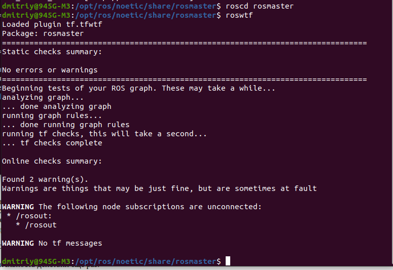

roscd rosmaster
roswtf

В Linux вы можете проверить, запущен ли roscore по-прежнему или нет, с помощью чего-то вроде этого (если вы видите строку, подобную этой, которая включает rosmaster, который запускается как часть roscore, значит, roscore запущен).:
ps -ef | grep -i rosmaster
roswtf исследует вашу систему, чтобы попытаться найти проблемы. Давайте попробуем это сделать:
roscd rosmaster
roswtf
Для следующего шага нам нужно, чтобы был подключен ведущий сервер, поэтому откроем второй терминал и:
roscore
В первом терминале выполним ту же последовательность действий еще раз:
roscd rosmaster
roswtf

Теперь, когда запущен roscore, roswtf провел онлайн-проверку вашего графика. В зависимости от того, сколько узлов ROS у вас запущено, это может занять много времени. Как вы можете видеть, на этот раз было выдано предупреждение:
WARNING The following node subscriptions are unconnected: * /rosout: * /rosoutros wtf предупреждает вас о том, что корневой узел подписан на раздел, в котором никто ничего не публикует. В данном случае это ожидаемо, поскольку больше ничего не запущено, поэтому мы можем проигнорировать это.
roswtf будет предупреждать вас о том, что выглядит подозрительно, но может быть нормальным для вашей системы. Он также может сообщать об ошибках при возникновении проблем, которые, по его мнению, являются неправильными.
В этой части мы установим в ROS_PACKAGE_PATH неверное значение. Мы также остановим наш roscoe, чтобы упростить вывод, который вы видите.
roscd
ROS_PACKAGE_PATH=bad:$ROS_PACKAGE_PATH roswtf

Есть много других типов проблем, которые может обнаружить roswtf. Если вы оказались в тупике из-за проблем со сборкой или связью, попробуйте запустить его и посмотреть, сможет ли это направить вас в правильном направлении.